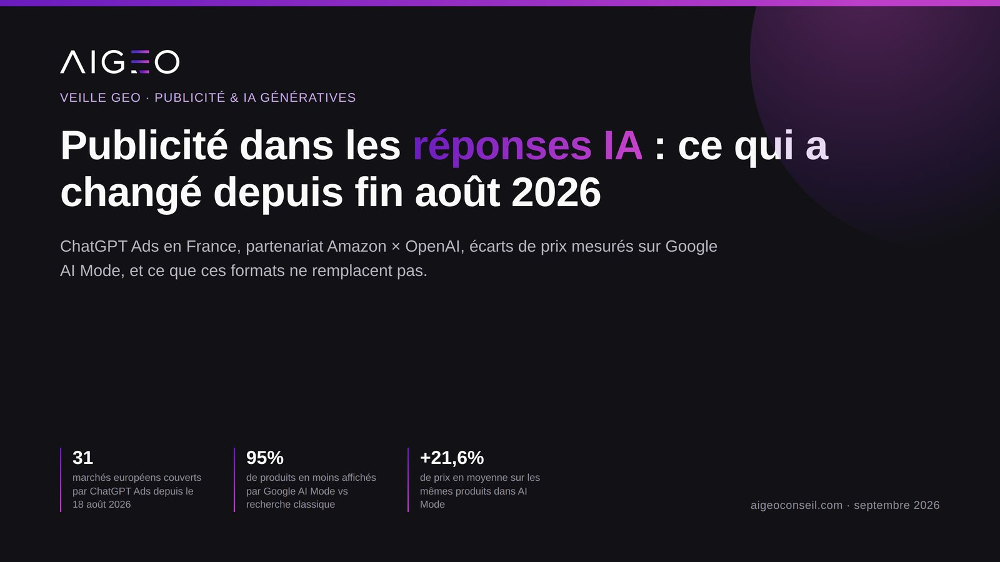
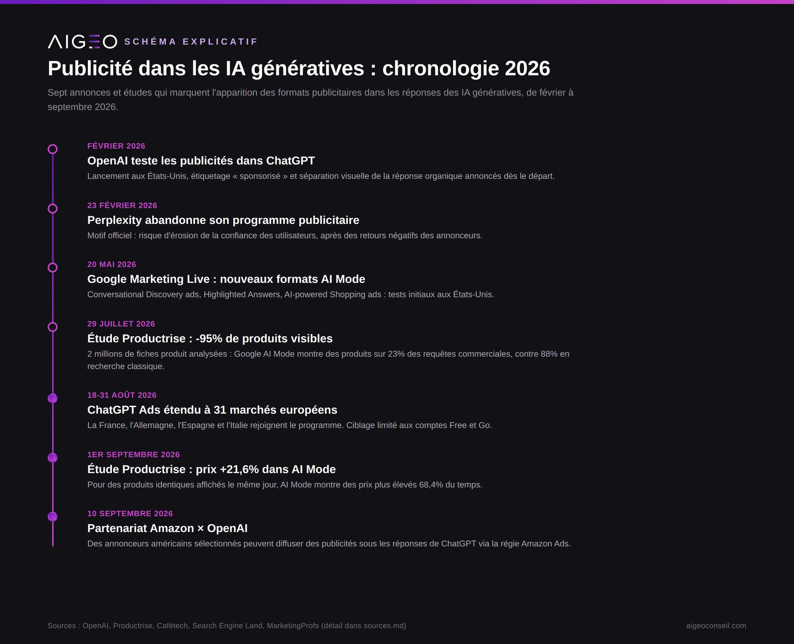
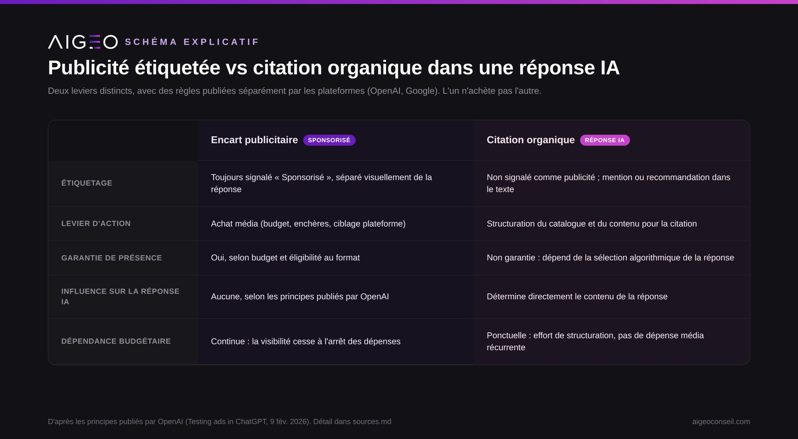

En trois semaines, ChatGPT Ads est arrivé en France, Amazon s'est associé à OpenAI pour diffuser des annonces sous les réponses de ChatGPT, et une étude indépendante a mesuré ce que Google AI Mode montre réellement en matière de produits. Pour une marque vendant des produits à conseil (literie, nutrition animale, cosmétique, sport, mobilier, matériel technique), ces trois faits ne racontent pas la même histoire : ils décrivent un espace publicitaire naissant, distinct de la citation organique que mesure le GEO.

Quels formats publicitaires sont réellement disponibles aujourd'hui ?
Trois plateformes ont pris des directions opposées en 2026.
- ChatGPT Ads. OpenAI a testé les publicités aux États-Unis à partir de février 2026, puis étendu le programme au Canada, à l'Australie, à la Nouvelle-Zélande, au Royaume-Uni, au Mexique, au Brésil, au Japon et à la Corée du Sud. Le 18 août 2026 (mise à jour le 31 août), OpenAI a annoncé l'extension à 31 marchés européens, dont la France, l'Allemagne, l'Espagne et l'Italie. Les annonces ne s'affichent que sur les comptes Free et Go ; les abonnements Plus, Pro et Enterprise restent sans publicité. L'accès reste pour l'instant piloté par l'équipe OpenAI Ads Solutions et des partenaires agences, l'accès self-service via Ads Manager étant annoncé séparément.
- Amazon x OpenAI. Le 10 septembre 2026, Amazon a annoncé un partenariat permettant à des annonceurs américains sélectionnés de diffuser des annonces textuelles ou visuelles sous les réponses de ChatGPT, via la régie publicitaire d'Amazon.
- Google AI Mode. Google élargit progressivement les formats testés lors de Google Marketing Live en mai 2026 (Conversational Discovery ads, Highlighted Answers, AI-powered Shopping ads), avec des tests plus récents portant sur l'insertion d'annonces texte issues de campagnes classiques en correspondance exacte et large, jusqu'ici réservées aux campagnes automatisées.
- Perplexity. À l'inverse, Perplexity a abandonné son programme publicitaire le 23 février 2026, invoquant le risque d'érosion de la confiance des utilisateurs, après un retour négatif des annonceurs sur le format et la tarification.

Ces publicités remplacent-elles la visibilité organique dans les réponses IA ?
Non, et la distinction est mesurable. Selon les principes publiés par OpenAI, les publicités sont « toujours clairement étiquetées comme sponsorisées et visuellement séparées de la réponse organique », et elles n'influencent pas le contenu généré par ChatGPT. Payer pour un encart publicitaire n'a donc aucun effet démontré sur la probabilité d'être cité, recommandé ou comparé dans le corps de la réponse elle-même.
Ce corps de réponse organique est par ailleurs beaucoup plus étroit qu'en recherche classique. Une étude Productrise publiée le 29 juillet 2026, portant sur plus de 2 millions de fiches produit et 100 000 SERPs et réponses AI Mode collectées sur trois semaines (marchés américain et britannique), montre que Google AI Mode affiche des produits sur seulement 23 % des requêtes commerciales, contre 88 % en recherche standard, avec 5,3 fois moins de produits affichés quand il y en a. Seuls 0,8 % des produits visibles en recherche classique réapparaissent dans AI Mode pour la même requête.
Une seconde étude Productrise, publiée le 1er septembre 2026 sur 23 jours de collecte (9-31 août), ajoute un signal de prix : pour les produits identiques apparaissant le même jour dans les deux surfaces, les prix affichés dans AI Mode sont en moyenne 21,6 % plus élevés que dans le carrousel shopping classique, et plus chers 68,4 % du temps lorsque les prix diffèrent. Cela suggère une sélection différente des sources et des offres, pas un simple miroir du référencement shopping existant.

Pourquoi ça concerne une marque à conseil, spécifiquement ?
Une marque de literie, de nutrition animale ou de cosmétique ne vend pas un produit qu'on compare sur le prix seul : l'acheteur pose des questions (« quel matelas pour un dos sensible », « quelle croquette pour un chien senior avec insuffisance rénale »), et c'est la réponse conversationnelle, pas l'annonce, qui influence la décision. Sur ce type de requête, être présent dans l'encart publicitaire étiqueté « Sponsorisé » et être cité comme référence dans le texte de la réponse sont deux résultats différents, obtenus par deux leviers différents : l'achat média d'un côté, la structuration du catalogue et du contenu de l'autre.
L'écart mesuré par Productrise (95 % de produits en moins visibles, sélection de prix différente) indique aussi que l'inventaire organique disponible dans AI Mode est restreint et sélectif. Une marque qui n'y apparaît pas ne peut pas compenser mécaniquement par de la publicité : les deux canaux sont étiquetés et positionnés séparément selon les règles publiées par les plateformes elles-mêmes.
Faut-il investir dans ces nouveaux formats publicitaires maintenant ?
Trois éléments invitent à la prudence avant un engagement budgétaire important :
- L'accès en libre-service à ChatGPT Ads n'est pas encore généralisé partout ; l'accès initial passe par des équipes commerciales ou des partenaires.
- Le ciblage ChatGPT Ads exclut les comptes payants (Plus, Pro, Enterprise), c'est-à-dire une partie de l'audience la plus engagée.
- Une plateforme majeure (Perplexity) a fait marche arrière sur son modèle publicitaire huit mois avant l'expansion européenne de ChatGPT Ads, ce qui montre que les formats et les règles du jeu ne sont pas stabilisés.
Ces éléments ne disqualifient pas les tests publicitaires ciblés, mais ils justifient de ne pas différer le travail sur la visibilité organique en attendant que ces formats mûrissent : la structuration du catalogue et du contenu pour la citation par les IA reste le seul levier qui ne dépend pas d'un budget média récurrent. C'est exactement ce que mesure notre méthode de relevé.
Ce qu'il faut retenir
- ChatGPT Ads est disponible en France depuis fin août 2026 (annonce du 18 août, mise à jour du 31 août 2026), uniquement sur les comptes Free et Go.
- Amazon diffuse, depuis le 10 septembre 2026, des annonces d'annonceurs américains sélectionnés sous les réponses de ChatGPT via sa propre régie.
- Selon une étude Productrise du 29 juillet 2026 (2 millions de fiches produit analysées), Google AI Mode affiche des produits sur seulement 23 % des requêtes commerciales, contre 88 % en recherche classique.
- Une seconde étude Productrise du 1er septembre 2026 mesure des prix 21,6 % plus élevés en moyenne dans AI Mode que dans le carrousel shopping classique, pour des produits identiques.
- Perplexity a abandonné son programme publicitaire le 23 février 2026 ; toutes les IA génératives ne suivent donc pas la même trajectoire de monétisation.
FAQ
Oui, depuis fin août 2026 (annonce OpenAI du 18 août, mise à jour le 31 août 2026), sur 31 marchés européens dont la France, mais uniquement pour les utilisateurs des comptes gratuits (Free) et Go.
Non. Selon les principes publiés par OpenAI, les publicités sont étiquetées et séparées visuellement de la réponse organique, et n'influencent pas le contenu généré. La citation organique dépend d'autres facteurs, notamment la structuration du contenu et du catalogue.
Non. ChatGPT et Google AI Mode testent et déploient des formats publicitaires en 2026, tandis que Perplexity a abandonné son programme publicitaire le 23 février 2026, invoquant un risque pour la confiance des utilisateurs.
Votre marque sort-elle dans les réponses IA, sans budget publicitaire derrière ?
Nous posons deux questions d'acheteur de votre catégorie à une IA, en conversation neuve, sans jamais nommer votre marque, et nous vous montrons le résultat avec les captures datées.
- OpenAI, « ChatGPT Ads expands across Europe », 18 août 2026, mise à jour du 31 août 2026. Lien
- OpenAI, « Testing ads in ChatGPT », 9 février 2026, mise à jour du 11 août 2026. Lien
- MarketingProfs, « AI Update, September 11, 2026: AI News and Views From the Past Week », 11 septembre 2026. Lien
- Productrise, « If AI Mode becomes the default, 95% of Google Shopping visibility disappears », 29 juillet 2026. Lien
- Productrise, « Google AI Mode shows the same products 21.6% more expensive », 1er septembre 2026. Lien
- Cafétech, « À la croisée des chemins, Perplexity AI abandonne la publicité », 23 février 2026. Lien
- Search Engine Land, « Google tests new conversational ad formats in AI Mode and Search », 20 mai 2026. Lien